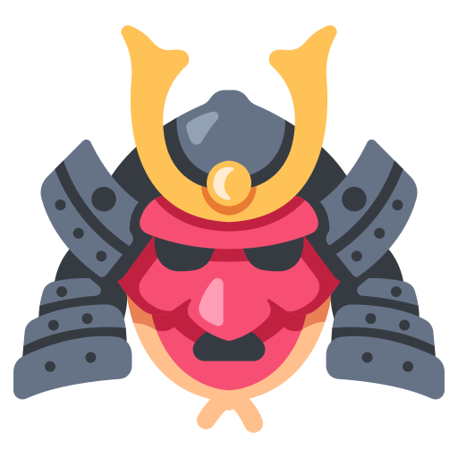

Guerrero
El guerrero es un personaje de caracter noble, especializado en el combate cuerpo a cuerpo. Posee habilidades en el uso de armas y armaduras pesadas, lo que lo hace ideal para enfrentar a enemigos poderosos
Mago

El mago es un personaje que posee vastos conocimientos. Esta especializado en el uso de la magia. Sus habilidades le permiten controlar elementos naturales, curar a sus aliados y atacar a sus enemigos con poderosos hechizos
Arquero

El arquero es un personaje de caracter frio y calculador, especializado en el uso de arcos y flechas. Posee habilidades en el combate a distancia y puede causar grandes daños a los enemigos desde lejos